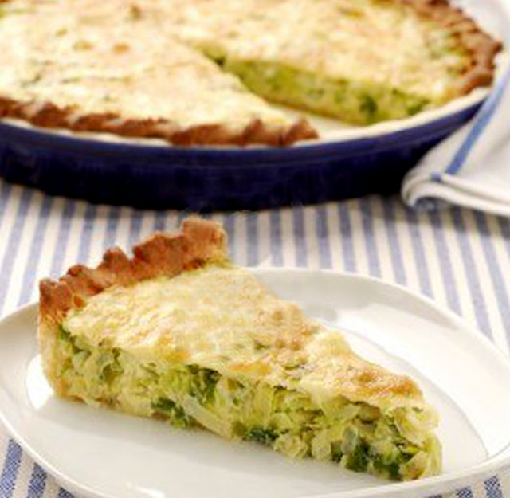

Squash Pie Recipe

Don't know what to eat? Veggies going rotten on the fridge? How about some nurturing and tasy recipe valid for dinners and lunches alike?
With this easy to do and quick recipe, you have a food trouble no more! Just about 30 minutes of preparation you can enjoy this awesome meal!
Ingredients:
- 4 medium sized squashes.
- 2 medium sized onions.
- 1 red pepper, yoou can also use half green and half red.
- Premade pie crust (you can use 2 for closing it).
Steps:
- Chop the onions and put them in a pan, then chop and add the pepper.
- Chop the squashes and add them to the pan once the onion is gold-colored.
- Once the squashes are soft, put the pie crust in the mold and get it in the oven, and wait for the dough to be crusty.
- Add the squashes in the crust and put it in the oven. You can close it with other crust or add some creamy cheese.
- Once it is done, serve and enjoy!